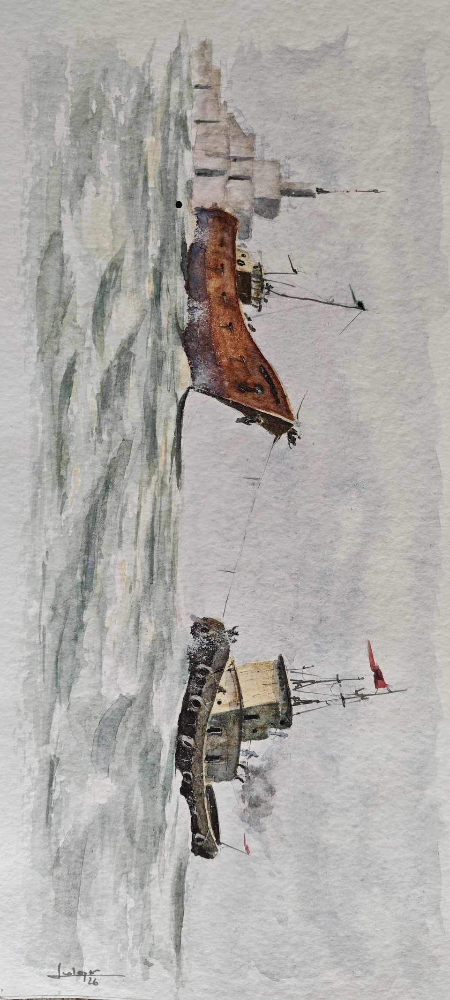
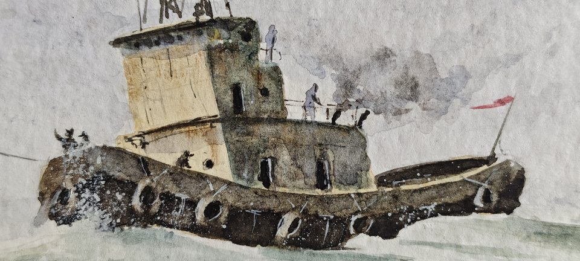
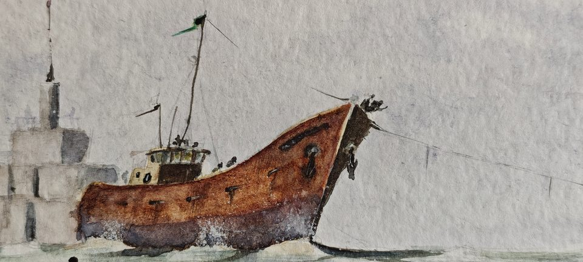
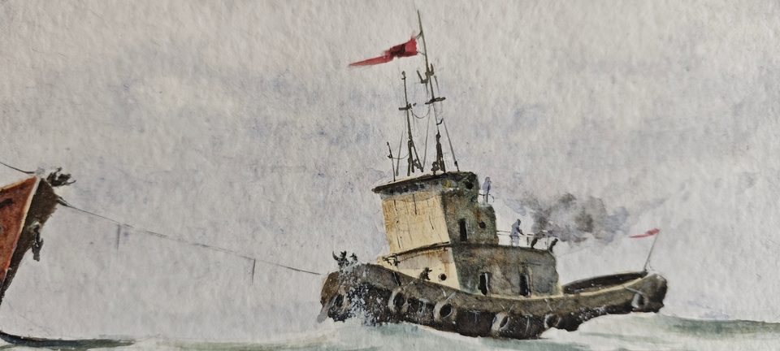

Diario
Hierro y agua
El casco oxida, el agua olvida. Entre los dos, el puerto respira.
Publicado

El primer trazo es el casco. Todo lo demás se apoya en él.

El agua entra y el hierro se oscurece. La pátina empieza a hablar.

El puerto se arma capa por capa. Cada lavado deja ver lo que había debajo.

El puerto no es un lugar: es una negociación. De un lado, el hierro, que quiere durar. Del otro, el agua, que no guarda nada. Entre los dos se juega todo lo que vale la pena pintar.
Los cascos se oxidan en silencio. La sal se mete por las grietas y deja una pátina que no se puede falsificar: cada barco lleva la marca de los mares que cruzó. Esa marca es lo que quiero atrapar en el papel.
El agua no es un fondo: es un personaje. Cambia de color según la hora, según el viento, según lo que refleja. Un puerto al mediodía no es el mismo puerto al atardecer, aunque los barcos no se hayan movido.
Pintar el hierro exige paciencia. No se puede correr: la acuarela es transparente y cada capa revela lo que había debajo. Si el dibujo no sostiene el casco, el color se derrumba.
El puerto huele a sal y a diesel. Ese olor no se pinta, pero se siente en los pinceles: en la forma en que el agua se corre por el papel, en la forma en que el pigmento se asienta en los bordes.
Hierro y agua. Dos materiales que se destruyen entre sí y que, por eso mismo, se sostienen. El puerto es esa contradicción hecha paisaje.
Muchas de estas obras nacen de mis visitas al puerto de Mar del Plata. Las escolleras, los cascos oxidados, el olor a sal y diesel: todo eso se filtra en el papel. La Escollera Norte y la Escollera Sur enmarcan el puerto como dos brazos de piedra; entre ellas, el mar se calma y los barcos respiran.
El hierro recuerda el agua. El agua olvida el hierro. El puerto es donde los dos se encuentran y ninguno gana.
Fuentes: observación directa en el puerto; cuaderno de taller, noviembre de 2026.
Las escolleras de Mar del Plata
El puerto de Mar del Plata es artificial: se inauguró en 1924 y se encierra entre dos escolleras que lo protegen del Atlántico. La Escollera Sur mide 2.750 m y fue declarada Patrimonio Histórico Nacional; la Escollera Norte mide 1.050 m. Ambas se levantaron con piedra traída en tren desde las canteras de Los Pinos, en Balcarce, por una empresa francesa (Société Nationale de Travaux Publics de Marsella), la misma que hizo el puerto de Montevideo.
Los trabajos empezaron en 1911 (Ley 6499, 1909). La grúa Titán montó la Escollera Sur; el arraigamiento de la Norte comenzó en diciembre de 1912. En 1922 se habilitaron los primeros sectores. Al final de la Escollera Sur se alza el San Salvador, patrono de los pescadores (obra de Emilio Manescau), que popularmente se llama «el Cristo». En la Norte atraque la Fragata Libertad y se encuentra el INIDEP.
Fuentes: Wikipedia — Puerto de Mar del Plata; Historia del puerto — Mardelplata.com; Historia de las escolleras — itMarDelPlata; Las legendarias escolleras — Infocielo.